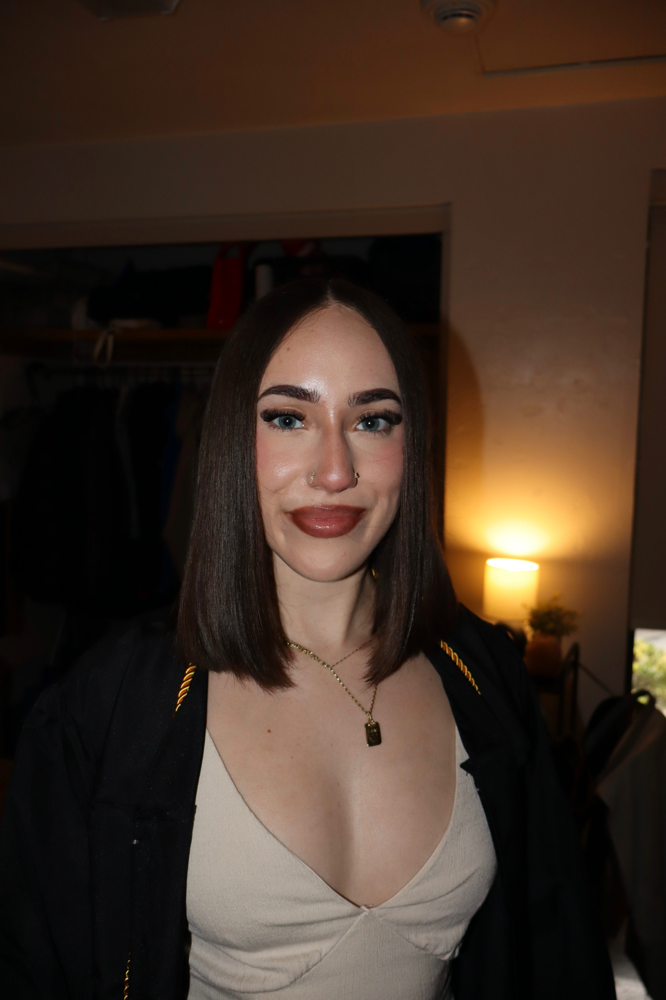

Biology • Research • Clinical Experience
Science, research, and patient care. Learn more about me!
I am a senior honors biology student with an information technology minor, combining research and clinical experience. This portfolio highlights some of my work in these areas, including research projects, presentations, and hands-on clinical experience.

Quick Overview
- Honors biology student at UMass Amherst
- Computational and clinical research experience
- Shadowing in perfusion and ECMO settings
- Crisis counseling and patient support work
Honors Thesis
My current research experience focuses on biology, computational analysis, and environmental RNA viruses in the Blanchard Lab.
Current Research
Uncovering the Functional and Ecological Roles of RNA Bacteriophages and Viruses in Soil Ecosystems